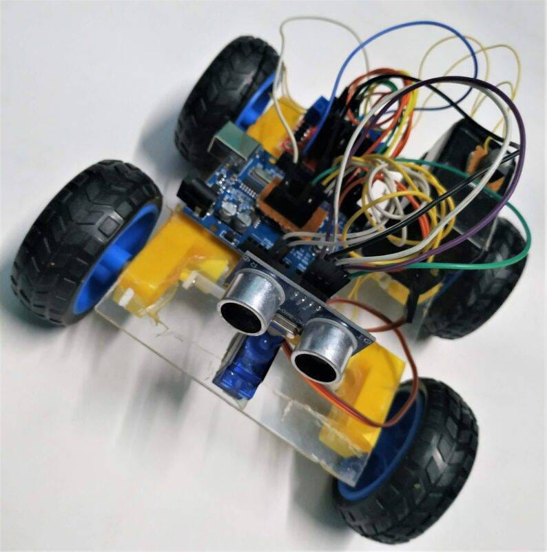

Obstacle Detecting Car
Working
An obstacle-detecting robot car uses an ultrasonic sensor to emit high-frequency sound waves. When these waves hit an object, they bounce back as echoes. The robot's microcontroller calculates the distance to the obstacle and automatically directs the wheels to turn or reverse, avoiding collisions.
Working Process
- Emission: The sensor's Trig (Trigger) pin sends out a high-frequency sound wave burst into the environment.
- Reflection: If the wave hits an obstacle, it bounces off the object and returns to the sensor, where it's detected by the Echo pin.
- Calculation: The microcontroller measures the time it takes for the wave to travel to the object and back. Using the known speed of sound in the air, the board calculates the exact distance to the obstacle.
- Decision Making: The microcontroller continuously compares this calculated distance against a pre-set threshold (e.g., 15 cm or 20 cm).
- If no obstacle is detected: The robot moves forward.
- If an obstacle enters the threshold: The robot stops, backs up, and turns to find a clearer path.
Components Required
| Component | Quantity |
|---|---|
| Arduino Uno | 1 |
| HC-SR04 Ultrasonic Sensor | 1 |
| L298N Motor Driver | 1 |
| DC Motors | 4 |
| Robot Chassis | 1 |
| Battery Pack | 1 |
Project Image
